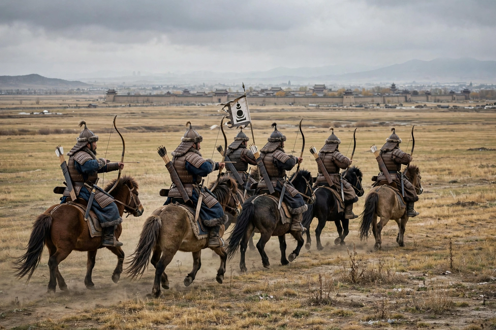

Mongol conquest of the Jin dynasty
For the later Mongol conquest of the Song dynasty, see Mongol conquest of China.
| Mongol conquest of the Jin dynasty | |
|---|---|
| Date | 1211 – 1234 |
| Location | North China, Manchuria, Mongolia |
| Result | Mongol victory; destruction of the Jin dynasty |
| Belligerents | Mongol Empire (with Southern Song and defector auxiliaries) vs. Jin dynasty (Jurchen) |
| Commanders | Genghis Khan, Muqali, Ögedei Khan, Tolui, Subutai · Jin emperors Wanyan Yongji, Xuanzong, Aizong |

The Mongol conquest of the Jin dynasty, also known as the Mongol–Jin War, was fought between the Mongol Empire and the Jurchen-led Jin dynasty of northern China between 1211 and 1234. The war ended with the complete conquest of the Jin by the Mongols, the first major step in the Mongol conquest of China. The Jin dynasty, which had ruled north China and Manchuria since 1115 and claimed descent from the Jurchen tribes, was destroyed after a gruelling 23-year struggle that transformed the demographic and political landscape of northern China.
Background
The Jin dynasty had dominated northern China since its defeat of the Liao dynasty and its seizure of territory from the Northern Song in the 1120s. By the early thirteenth century the Jin state was weakened by flooding of the Yellow River, fiscal strain, warfare with the Southern Song, and court factionalism. In 1206 Temüjin was proclaimed Genghis Khan of the unified Mongol tribes. The Jin court had long tried to keep the steppe tribes divided and had humiliated Mongol leaders; Genghis refused to perform submission to the new Jin emperor Wanyan Yongji in 1210, setting the stage for invasion.
The campaigns of Genghis Khan, 1211–1215
In 1211 Genghis led perhaps 100,000–120,000 horsemen against a Jin empire with a far larger population but dispersed armies. The decisive Battle of Yehuling (Wild Fox Ridge) in August 1211 destroyed the main Jin field army in the passes north of the Great Wall. Mongol columns raided deep into Jin territory; in 1213 they penetrated the Juyong Pass and looted the countryside around the Jin central capital, Zhongdu (modern Beijing). A truce in 1214, purchased with tribute including a Jin princess, collapsed when the Jin court abandoned Zhongdu for Kaifeng. After a year-long siege aided by Chinese defectors and engineers, Zhongdu fell in June 1215 and was thoroughly plundered.
Muqali's campaigns and stalemate, 1217–1227
When Genghis departed westward for the conquest of Khwarazm in 1219, he left his general Muqali in command with a modest force. Muqali campaigned through Shanxi, Hebei and Shandong, taking many cities but unable to hold all of them; the war settled into a cycle of sieges, defections and recoveries. After Muqali's death in 1223 Mongol pressure eased, and the Jin under Emperor Aizong (r. 1224–1234) enjoyed a partial revival, even defeating Mongol forces on occasion.
The final campaigns, 1230–1234
Genghis Khan died in 1227 during the conquest of Western Xia. His successor Ögedei renewed the offensive against the Jin in 1230. Mongol armies under Ögedei and Tolui crushed the Jin at the Battle of Sanfengshan in 1232, where the last great Jin field army was annihilated in a snowstorm. Kaifeng was besieged; Emperor Aizong fled to Caizhou, where, in a final alliance with the Southern Song — which sought revenge and the recovery of lost territory — Mongol and Song forces besieged the city. Aizong committed suicide on 9 February 1234, and his brief successor, Emperor Modi, was killed the same day. The Jin dynasty was extinguished.
Aftermath
The conquest delivered Manchuria and all of north China to the Mongols, together with enormous numbers of Chinese craftsmen, engineers and soldiers. The population of the former Jin territories fell catastrophically through war, massacre, famine and flight — from perhaps 50 million registered persons to a fraction of that in the census of 1236. Disputes with the Southern Song over the spoils of victory led directly to the Mongol–Song war, which ended in 1279 with the unification of China under the Yuan dynasty.
See also
Mongol conquest of the Khwarazmian Empire · Jin dynasty (1115–1234) · Yuan dynasty · Genghis Khan